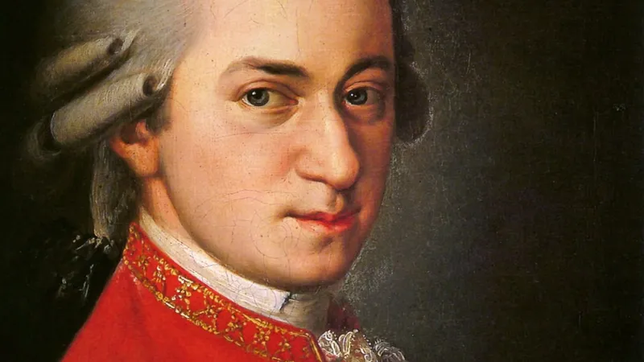
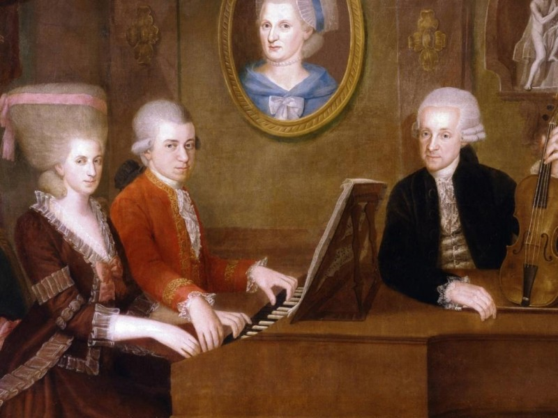
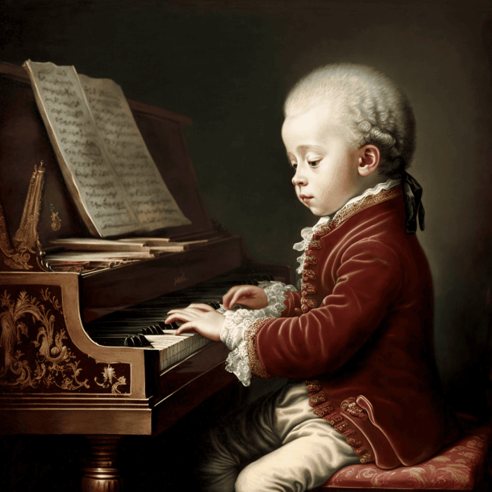

Premonitia si moartea
Un copil minune în lumea muzicii, Wolfgang Amadeus Mozart a început sa cânte pentru aristocratia Europei si si-a compus primele lucrari la vârsta de sase ani. 30 de ani mai târziu, aflat la apogeul carierii, a murit dupa o scurta suferinta la Viena. Fusese oare otravit?
Decenii mai târziu, Sophie Haibel, sora mai mica a sotiei lui Mozart, Constanze, îsi amintea înca strania premonitie. În prima duminica din decembrie 1791, se afla în bucatarie, unde pregatea o ceasca de cafea pentru mama sa. Cu o zi înainte fusese la Viena ca sa-si viziteze cumantul care se îmbolnavise, dar revenise cu vesti îmbucuratoare. Acum, în timp ce astepta sa fiarba cafeaua, Sophie, privea fix, cazuta pe gânduri, flacara aprinsa a unei lampi cu gaz si se gândea la sotul suferind al surorii sale. Deodata flacara s-a stins „complet de parca n-ar fi fost niciodata aprinsa”, avea sa scrie ea mai târziu. „Nici macar o scânteie nu a mai ramas pe fitilul principal si totusi nu se facuse nici un pic de curent – pot sa jur”. Cuprinsa de un presentiment îngrozitor, a fugit la mama sa, care a sfatuit-o sa se întoarca acasa la Mozart fara întârziere.
Constanze si-a întâmpinat sora, povestindu-i ca Mozart avusese o noapte agitata, si a rugat-o sa ramâna. „Ah, draga mea Sophie, cât ma bucur ca ai venit, a spus muzicianul. Trebuie sa stai la noapte aici si sa vezi cum mor.” Lânga el se afla un tânar asistent numit Sussmayr, caruia Mozart îi dadea instructiuni pentru a încheia ultima sa compozitie, un recviem. A fost chemat un preot, apoi un medic care a recomandat ca bolnavului sa i se puna pe fruntea fierbinte comprese reci; la 12.55 dimineata, pe data de 5 decembrie 1791, Mozart murea. Peste nici doua luni, fostul copil – minune si prolific compozitor ar fi împlinit 36 de ani.
Mereu în lipsa de bani, Mozart lucrase într-un ritm febril pentru a încheia comenzi importante pe care le primise în cursul anului, iar prietenilor si rudelor le parea tensionat si epuizat de prea multa munca. Dar când a cazut la pat pe 20 noiembrie, nimeni nu a banuit ca putea fi vorba de o boala fatala. Georg Nikolaus Nissen, cel de-al doilea sot al lui Constanze, a consemnat simptomele în biografia pe care i-a dedicat-o compozitorului în 1828. „Boala a început cu umflarea mâinilor si picioarelor, si o aproape totala incapacitate de a se misca; apoi au urmat varsaturi bruste, si aceasta se numeste febra miliara acuta.” Diagnosticul a fost confirmat în registrul oficial de decese al orasului Viena.
Mozart însusi banuia ceva necurat la mijloc. Cu câteva saptamâni înainte sa moara, i-a spus lui Constanze ca fusese otravit: „Cinev mi-a dat acqua toffana si a calculat exact data cand voi muri.” O otrava inodora si cu actiune lenta, pe baza de arsenic, acqua toffana îsi tragea numele de la Giulia Tofina, o vrajitoare italiana din secolul al XVII-lea, care inventase potiunea si o vindea asa-zisilor criminali. Mozart ajunsese sa creada ca recviemul, pe care il comandase un necunoscut era destinat propriilor sale funeralii.
Pe 31 decembrie 1791, un ziarist berlinez informa asupra mortii compozitorului si specula în privinta cauzei acesteia. „Deoarece trupul i se umflase dupa moarte, s-a crezut ca fusese otravit.” În niste însemnari nedatate, fiul mai mare al lui Mozart, Carl Thomas, îsi amintea ca trupul tatalui sau era atât de umflat si mirosul de putrefactie atât de puternic încât nu s-a facut nici o autopsie. Spre deosebire de majoritatea cadavrelor care se racesc devin inerte, corpul lui Mozart a ramas moale si elastic, asemeni celor morti prin otravire.
Dar cine sa fi dorit moartea lui Mozart? Vaduva nu dadea credit zvonurilor despre o posibila otravire si nu a numit nici un suspect. Astfel ca povestea a fost curând data uitarii – pentru a fi însa reluata cu accente dramatice, trei decenii mai târziu de nimeni altul decât de rivalul care ar fi putut foarte bine sa-i doreasca lui Mozart sfârsitul.

Invidia lui Salieri
Cu numai cinci ani mai vârstnic decât Mozart, Antonio Salieri fusese numit în 1774 compozitor la curtea împaratului Iosif al II-lea, la vârsta de numai 24 de ani. Cand Mozart a ajuns la Viena, 7 ani mai târziu, italianul era cel mai de seama muzician al capitalei austriece, extrem de apreciat de aristocratie si favorit printre pretentiosii melomani ai orasului. Salieri era un compozitor facil si prolific, printre elevii sai având sa se numere mai târzit Beethoven, Schubert si Franz Liszt. Dar în Mozart el a recunoscut imediat un rival, un geniu al carui talent nu avea cum sa-l egaleze vreodata. Putini erau cei care se îndoiau în cercurile artistice Vieneze de invidia pe care o avea Salieri fata de Mozart, iar acesta din urma nu facea nici un secret din dispretul pe care-l nutrea pentru compozitorul Curtii.
Salieri a trait sa vada întreaga Viena sarbatorind 50 de ani de la numirea sa în calitate de compozitor al Curtii în 1824. Dar cu un an înainte facuse o declaratie surprinzatoare. În octombrie 1823 un elev de-al lui Beethoven, Ignaz Moscheles, i-a facut o vizita batrânului Salieri, la acea vreme internat într-un spital de la marginea orasului.
Nereusind sa vorbeasca decât în frânturi de fraza si preocupat de moartea sa iminenta, Salieri a jurat ca „nu este nici un strop de adevar în acest zvon absurd; stii cum ca l-as fi otravit pe Mozart”. La mijloc era doar rautate, i-a spus lui Moscheles; „spune lumii... ca batrânul Salieri care va muri curând, ti-a spus asa”. O luna mai târziu Salieri a încercat sa se sinucida. Cei care l-au vizitat pe patul de moarte povesteau ca delira despre rolul pe care l-ar fi avut în moartea lui Mozart si vroia sa-si marturiseasca pacatul. Mult apreciatul compozitor al Curtii avea sa moara anul urmator.
Biograful italian al lui Haydn, Giuseppe Carpani, a încercat sa salveze onoarea compatriotului sau. A cautat un medic care fusese consultat în faza finala a bolii lui Mozart si a obtinut de la acesta diagnosticul de febra reumatica. Daca Mozart fusese otravit, a întrebat Carpani, unde erau dovezile? „Inutil sa mai întrebati. Nu exista nici o proba si este imposibil sa se mai gaseasca una vreodata.” Dupa moartea sotului ei, Constanze si-a trimis fiul sa studieze cu Salieri. Întrebat despre zvonul conform caruia compozitorul Curtii îi otravise tatal, baiatul a declarat ca Salieri nu-l omorâse pe Mozart, dar în schimb „nu încape îndoiala ca îi otravise viata cu intrigi”. Salieri însusi se pare ca ar fi spus ca era pacat ca Mozart murise atât de tânar, dar pentru ceilalti compozitori nu era un lucru tocmai rau; daca ar fi trait mai mult, „nimeni nu ne-ar fi dat vreo coaja de pâine pentru munca noastra”.

Copilul minune
În ianuarie 1762 concerteaza la Munchen în fata electorului de Bavaria, în septembrie acelasi an concerteaza la Passau unde arhiepicopul ramâne încântat de muzica lor, dar marea consacrare o au la Viena în aceasi luna când î-si arata virtuozitatea în fata majestatilor imperiale Maria Tereza si Francisc. Aici s-a întâlnit cu Haydn care a spus “este de ajuns, puiule, acum trebuie sa te odihnesti putin”.
În august 1763, la Frankfurt, Mozart a cântat si a improvizat la vioara si la clavecin, încântând auditoriul, care, la urma, l-a ovationat si l-a încarcat cu daruri. Printre spectatori s-a aflat si tânarul Goethe care a fost emotionat pâna la lacrimi.
O întâmplare a ramas memorabila când fiul lui Johann Sebastian Bach, Johann Christian Bach, el însusi compozitor a executat prima parte a unei sonate proprii, dupa care s-a oprit si a spus copilului care-l urmarea atent:”Poti termina tu sonata aceasta a mea?” Spre uimirea întregii asistente Wolfgang s-a asezat la clavecin si a improvizat cu siguranta si precizie partile a doua si a treia ale sonatei. “Copilul acesta este un adevarat fenomen !” a rostit emotionat compozitorul.
Anecdote
Un compozitor s-a prezentat la Mozart cu o partitura. In timp ce-l asculta Mozart isi scotea la fiecare trei minute palaria,saluta si o punea apoi la loc pe cap.
-Va este prea cald? il intreba compozitorul.
-Nu, raspunse Mozart. Dar obisnuiesc sa-mi scot palaria cand intalnesc o veche cunostinta. Si sunt atatea in manuscrisul dumnitale, incat trebuie sa salut mereu!
După părerea dumneavoastră, care este cel mai mare muzician”a fost întrebat, cândva, Rossini.
Beethoven”
”Dar Mozart?”
”Oh, el este unic” |
 |